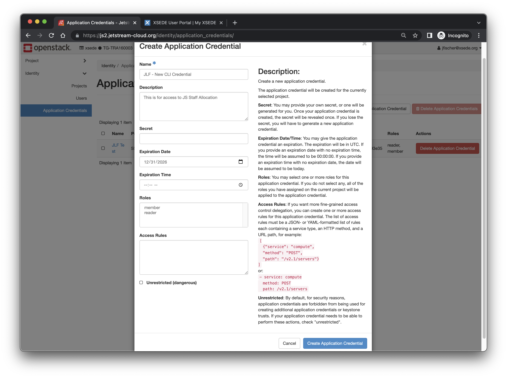
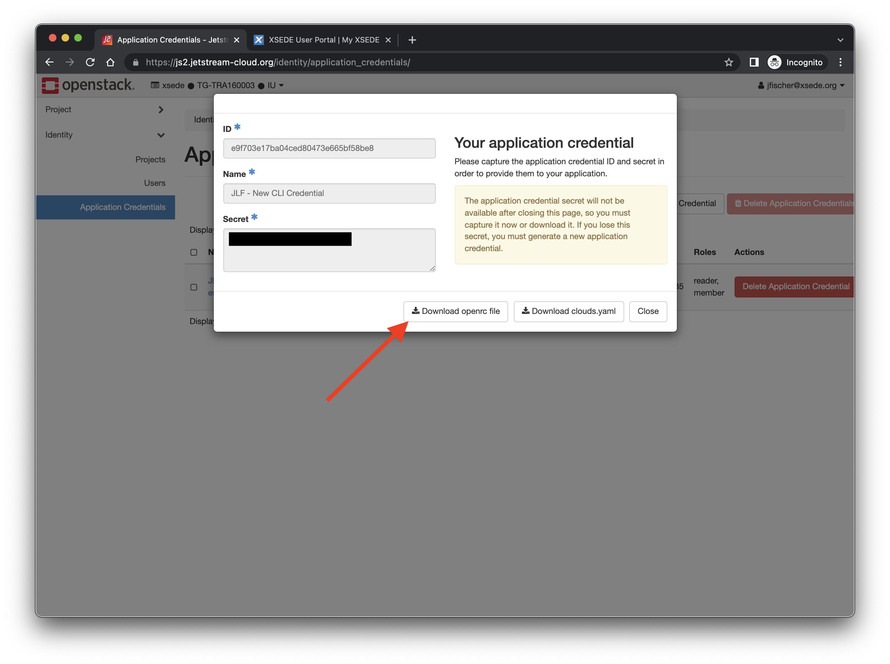

Setting up application credentials and openrc.sh for the Jetstream2 CLI¶
New openrc format for Jetstream2 CLI!¶
One of the key changes to using Jetstream2’s command line interface (CLI) is that it uses XSEDE credentials for authentication. To do that, you have to create an application credential via the Horizon interface. This will require a different sort of openrc than Jetstream1. This page will walk you through that process.
Please make sure to source the new Jetstream2 openrc in a fresh terminal session. If you invoke it in a session that’s had another openrc sourced, you’ll get an error like this: Error authenticating with application credential: Application credentials cannot request a scope.
Openrc files are allocation-specific¶
Each allocation you wish to use from the command line will need its own application credential and openrc file.
You CANNOT use the openrc generator like in Jetstream1¶
The openrc generator on the Horizon right side (username) menu will NOT work properly with Jetstream2! Please use the process below to get your application credential based openrc file.
Using the Horizon dashboard to generate openrc.sh¶
| Action | Screenshot |
|---|---|
| Navigate to https://js2.jetstream-cloud.org Make sure it says "XSEDE Globus Auth" in the Authenticate Using box. |

|
| The first time you log in you'll be directed to a Globus page to permit authorization.
If you have linked institutional, Google, Orcid, or other credentials, you'll be able to use those to authenticate. We know XSEDE credentials work correctly so we will show that in our example.
|

|
| The next page should be the login screen for your credentials. We're showing the XSEDE login screen as our example. | 
|
| If you're using two-factor auth with your credentials as XSEDE does, you'll likely get a Duo or Authenticator screen here. | 
|
| You should be at the Horizon Dashboard home now. | 
|
| As application credentials are unique to each allocation, if you are on multiple XSEDE allocations, you'll want to verify you're using the correct one and change to the correct one if you are not. You do that by clicking at the top left next to the Jetstream2 logo where it has "XSEDE * TG-XXXXXXXXX * IU". That will show allocations under "Projects". |

|
| From here, you'll select Identity and then Application Credentials from the sidebar menu on the left Once on that page, you'll click "Create Application Credential" towards the top right (noted by the red arrow) |

|
| This will bring up the application credential creation screen. The sidebar has descriptions if you need help. We recommend using a descriptive name and to put details in the description so you can easily see what it is for. The Secret is the password or passphrase. We recommend using a strong password here or multi-word passphrase. As the page notes, you will not be able to retrieve it later if you forget it or delete the openrc file you generate. Set the expiration date and time. If you do not set a date, it will default to TODAY as noted on the sidebar. We do not recommend setting the roles, access rules, or selecting unrestricted unless you are an advanced user and understand the full implications of altering these. |
 |
| When you hit "Create Application Credential" it will then generate the credential and bring up a confirmation box. Please make sure to save the credential ID and secret if you need them for things other than the openrc. To get the openrc for CLI access, please click the "Download openrc file" button referenced by the red arrow in the screenshot. That will download a plain text file for use with the Openstack CLI client We recommend giving your new openrc file a descriptive name (e.g. openrc-TG-TRA111111.sh, using the XSEDE project name or some other meaningful description.) |
 |